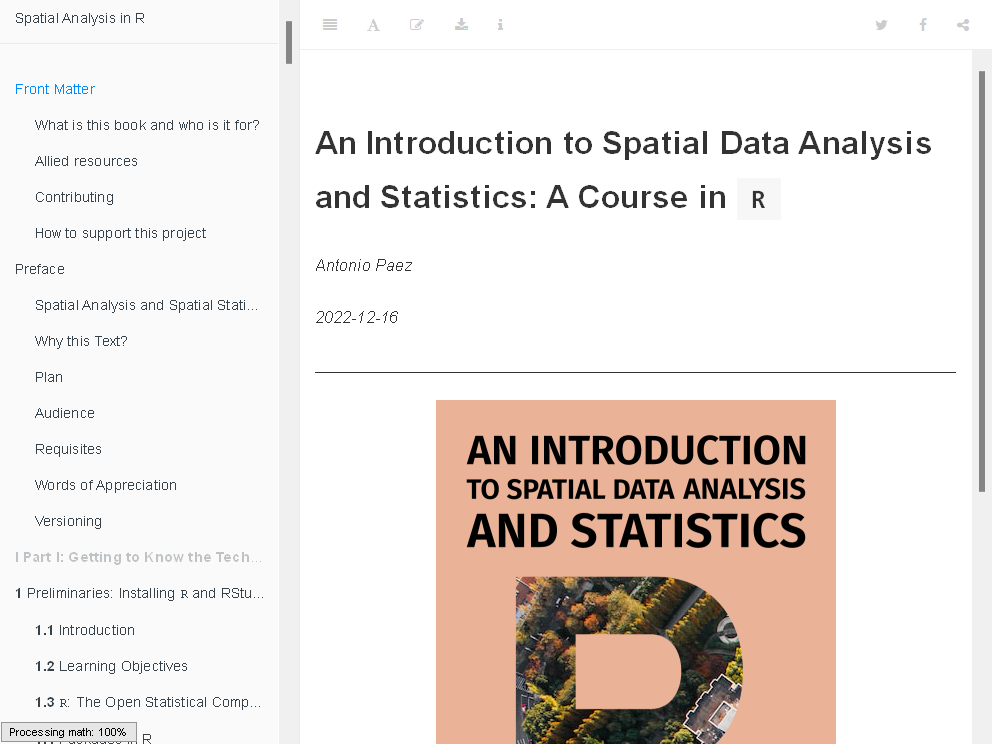
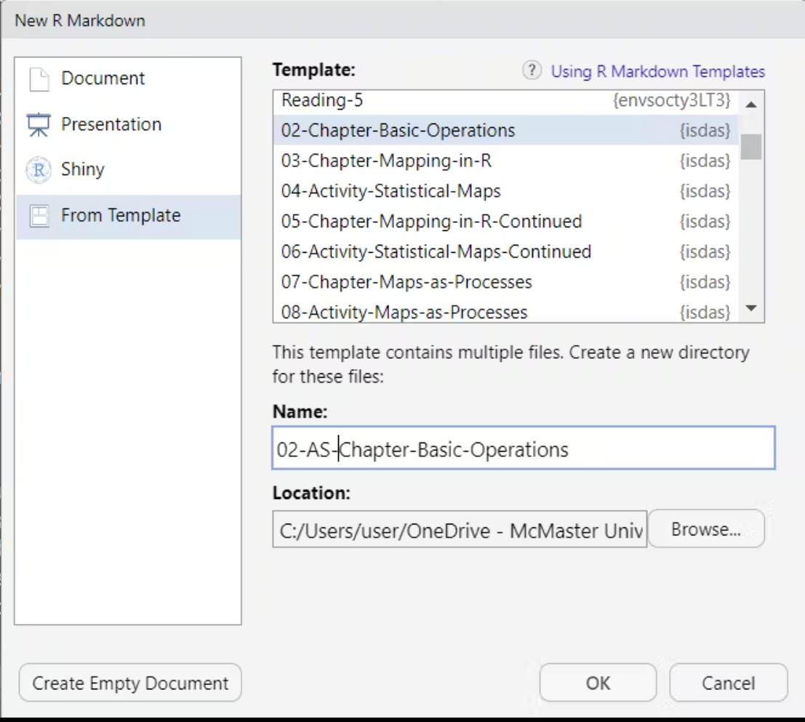
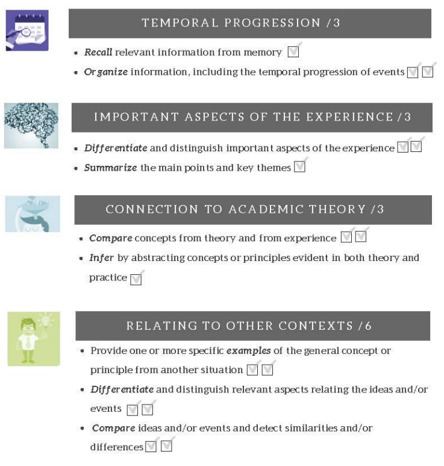
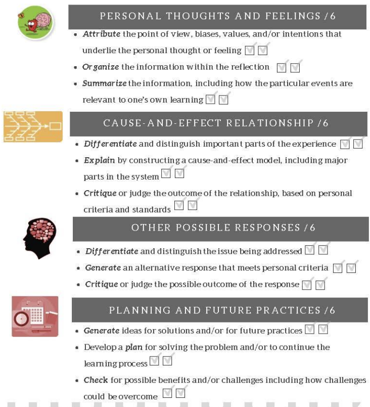
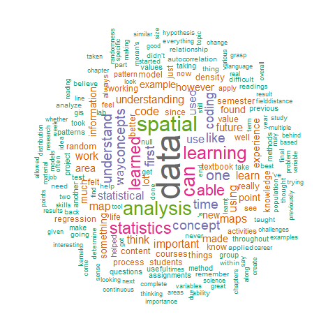
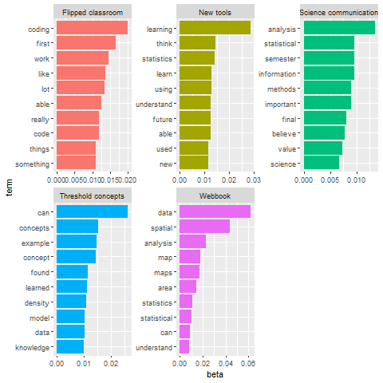

Teaching spatial statistics
Using open educational and reproducible resources
Anastasia Soukhov (PhD Candidate, McMaster University)
Overview
- The course and materials used
- Learners’ reflections
- My reflections
A) Course materials
Getting started with ENVSOCTY 4GA3
The Webbook:
- Part 1: Introductions
- Part 2: Getting to know the techniques
- Part 3: Point pattern analysis
- Part 4: Areal unit data
- Part 5: Field data
The webbook is accompanied by {isdas}
.Rmd templates with:
- Chapters
- Activities

Data sets used in the Chapters and Activities:

Mark breakdown for learners
- 40% weekly assignments; flipped classroom
- 30% final group project report
- 30% reflections
Example reflection question
What is in your opinion the most important thing that you learned while in this course? How did you learn it? What challenges and opportunities did you face when learning this thing? Did learning this thing impact you? If so, how?
Would you say this experience will impact how you do things in the future, and if so how?
Reflection marking rubric
Reflection marking rubric
What we think this course does
- Saves the learners money
- Focuses the mind away from the trivial
- Teaches valuable skills
- Incentivises ownership of the learning process
- Provides a positive challenge
B) But what did they think? Learners’ reflections
Flipped classroom (1/5)
“I enjoyed the split classroom style. It made for a demanding but not stressful experience. I also liked the lab and classroom topics, applying the concepts and then learning the details was really helpful for understanding..”

New tools for the future (2/5)
“…I’ve even done a bit of R coding in my free time using open-source data just for fun when a random topic … that I want to investigate further (i.e. covid cases and vaccinations, real estate prices…)”
Science communication (3/5)
” This reflection merely put into words a realization that I had failed to experience in earlier stats courses:… being able to analyse your data in a way that is fair, comparable, and communicable is invaluable.”
Threshold concepts: e.g., null landscapes (4/5)
“Learning about the null landscape was where my mindset started to switch…. So naturally, I started to think about how you could consider points random….[how] to explain randomness statistically. This was linked with hypothesis testing, which helped me understand set boundaries in the setting of point pattern analysis.”
Webbook (5/5)
” The textbook was very comprehensive, and the integration with R-Studio definitely enhanced my understanding of the code connected with each concept..”
“While the textbook was a superb resource, it is also quite dense, and something like a chapter summary at the end that highlights the key takeaways ….”
Clusters of topics within learners’ reflections
C) My reflections
Wrapping up: my reflections
- Transparency and openness of course material: easier for all
- The flipped classroom format: two-way knowledge transfer.
- Reflections in place of tests: gives space for connections
Thank you! Questions/Comments?
I’d like to acknowledge…
Anastasia Soukhov (soukhoa@mcmaster.ca)

Teaching spatial statistics Using open educational and reproducible resources Anastasia Soukhov (PhD Candidate, McMaster University)